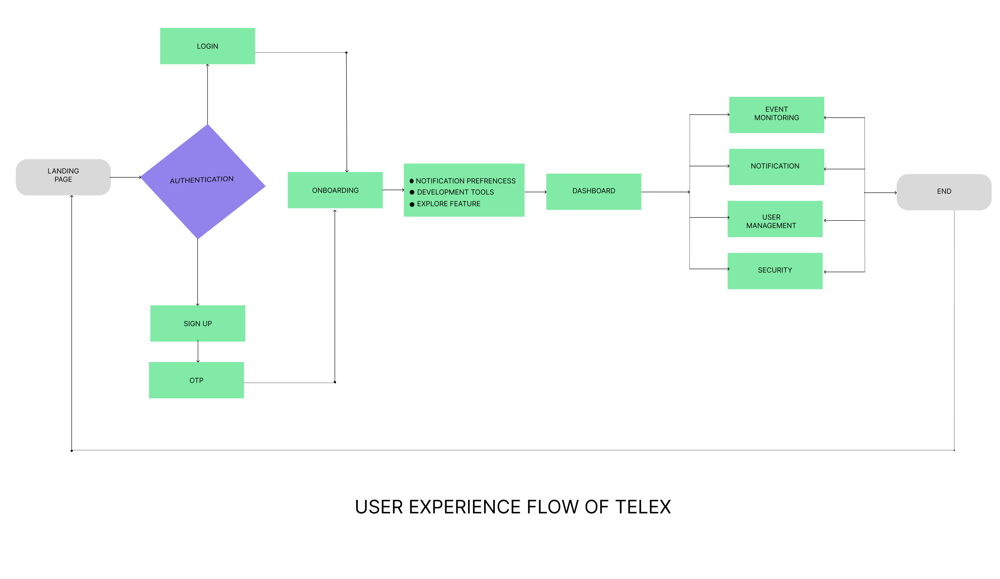

Role:Cybersecurity Analyst. Task: Analyzed a pcap file that potentially contains a series of malicious activities that have resulted in the compromise of the Apache Tomcat web server. Tools:Wireshark, Network Miner, Cyberchef, IP Geo-locator.

Role:Cybersecurity Analyst. Task: Carried out phishing email detection on a suspicious task scheduler. Tools:LetsDefend.io, VirusTotal, Kali Linux.

Role:Cybersecurity Analyst. Task: Investigated an insider threat via the suspects home network traffic. Tools:Wireshark, aircrack-ng.
Role:sub-team lead . Contribution: Contribution: Actively curated and cordinated the team that delivered this document. Tools:Google Docs, Google Spreadsheet, Github, Figma.
Role:Assistant Project lead . Contribution: Assisted the team leads in the overview of the design template end to end. Tools:Figma.
Telex is a real-time notification system that organizes app events into channels, enabling developers to track updates, collaborate on issues, and take action in a centralized and efficient manner.
Role:Assistant Project lead . Contribution: Assisted the team leads in the overview of the PRD and specifically curated and managed the drafting team. Tools:Google Docs, Google Spreadsheet, Figma.

Role:Sub-team lead . Contribution: Curated tickets for the channel management design and worked with assigned designer to prototype the channel management feature. Tools:Notion, Figma.
Role:Product Manager . Contribution: Worked with a team of product managers that conceptualized and delivered the loan application. Tools:Google docs, Google sheet, Notion, Figma.